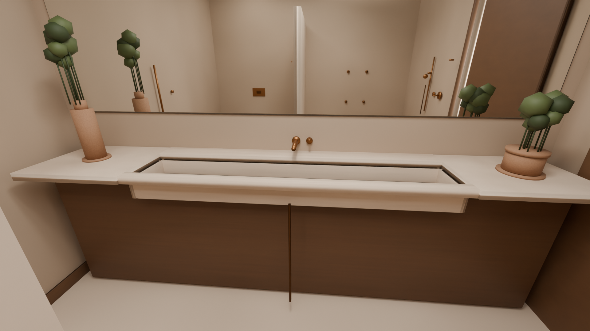
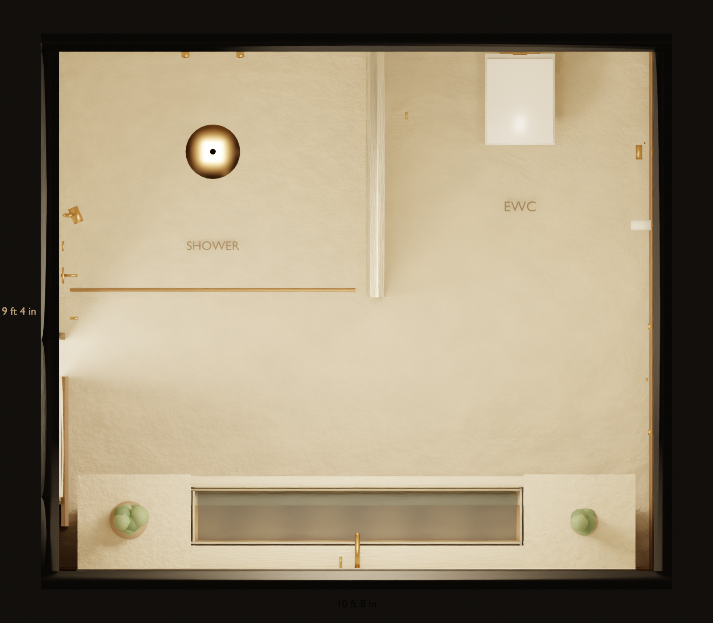
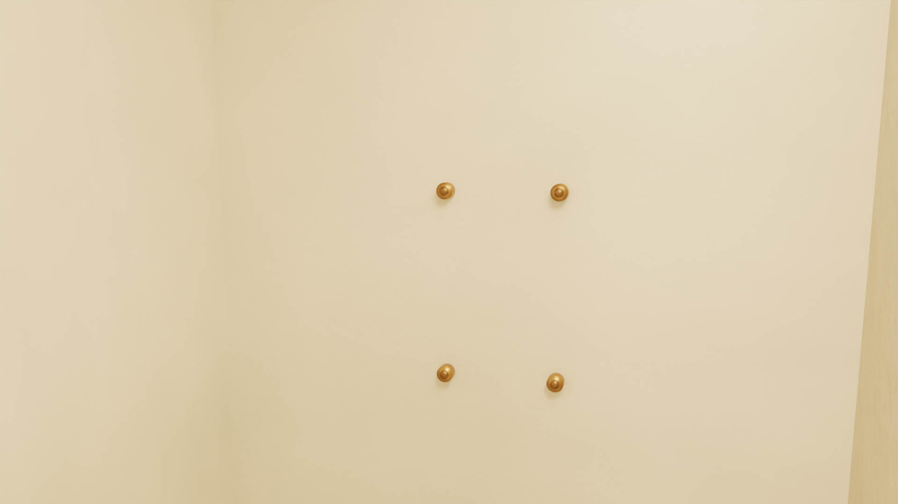
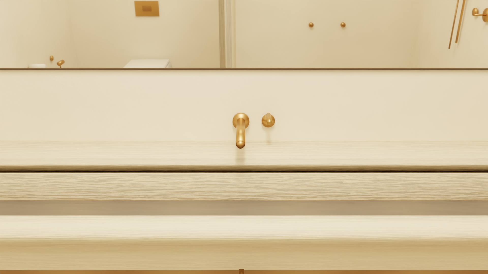

Room
| Item | Size and place |
|---|---|
| Clear room | 10 ft 8 in by 9 ft 4 in. Ceiling drawn at 9 ft 0 in. |
| Door from the dressing side | West wall. Opening starts 1 ft 4 in from the south corner. Clear opening 860 mm by 2100 mm. Smoked-oak leaf. |
| Floor and wet walls | Honed travertine, filled and sealed. |
| Dry walls and ceiling | Warm plaster. |
| Vanity | South wall. Smoked oak carcass. Stone top 900 mm above the floor, about 3.05 m long and 520 mm deep. |
| Trough | Integrated in the top, centred, 1.82 m long. Wall spout lands in the channel. Plants sit on the stone at both ends, outside the trough. |
| Mirror | Frameless, same width as the counter, with a warm backlight in the shadow gap and a demister. |
| Shower | North-west, open walk-in, about 5 ft 6 in by 4 ft 5 in. Curbless. Linear bronze drain at the entry. |
| WC | North-east alcove, divided from the shower by a travertine nib to 2.10 m. |
Fittings
The basin tap is Studio Ore Chapter One, solid brass, unlacquered brushed brass. The colour is the brass, with no lacquer and no PVD. Gessi finish 727, Brass Brushed PVD, is the coating on the shower, the hand shower, the body jets, and the towel stand. The glass hinges and the small wall accessories stay Brodware.
Gessi splits in two. Rettangolo tapware and accessories are brass, then coloured. Private Wellness, Immersiva, Tremillimetri, Minimali, and Afilo heads are steel with a finish on top. Finish 727, Brass Brushed PVD, is that colour coat on either body. The ceiling systems that do rain, waterfall, and mist are Minimali and Afilo, and many of them add coloured light. Spotwater wall heads split the sprays: rain, mist, waterfall, or one head with rain, spray, and massage. None of those are uncoated brass.
| Qty | Item | Article | Notes |
|---|---|---|---|
| 1 | Basin tap. Wall mixer, curved spout, side lever | Studio Ore Chapter One 02, SKU 02-V2-L-BB | This is the tap on the trough. Solid brass, unlacquered brushed brass, lever. The spout reaches 196 to 226 mm and turns down into the channel. Body is 55 mm across. The page says this mixer mounts on a stud wall, or where the back of the wall can be reached. First fix WMNMIXIP is included. City Stik 1.9906.08 is off this row: the pin and the straight 200 mm pipe were the tap that did not sit well on the trough. |
| 1 pair | Basin wall taps, hot and cold | 1.9949.00 in .09 | Separate pin-lever wall taps. Not on the plan. |
| 1 | Thermostatic valve | Gessi Hi-Fi, separate outlets | West wall of the shower. One outlet each for the head, the hand shower, and the body jets. The City Stik diverter is not this valve. |
| 1 | Wall head. Rain and spray | Gessi Immersiva 57506, finish 727 | The article you opened. Wall mounted, about 370 mm wide and 525 mm projection. Two sprays: rain and a concentrated jet. Not a waterfall and not a massage spray. Finish 727 is Brass Brushed PVD, a coating on the metal, not brass itself. The waterfall in Immersiva is a separate slit. The magnetic hand shower and the body jets are separate articles in the same collection. |
| 1 | Overhead massage | Gessi Meccanica | Rain, spray, and massage. Brushed brass on this head is PVD 727, a coating. Not specified as the brass hardware. |
| 1 | Hand shower, three jets, on a slide bar | Gessi Rettangolo 14376 | Brass hand shower with three jets, ordered in finish 727, on Rettangolo slide rail 20142. Immersiva also has a magnetic hand shower in the same collection as 57506. If this one piece has to be uncoated brass, the other article is Newport 280E/03N: solid brass, slide bar, spray, rain, and massage, rubber nozzles. |
| 4 | Body jets | Gessi Private Wellness, lateral body jet 32973 | Four wall jets on one outlet, two at 1400 mm and two at 900 mm. Adjustable jet 20172 and mist jet 32979 are in the same programme. Finish 727, brushed brass PVD. Brodware has no body jet. |
| 1 | Health faucet | Same spray family as the handshower in .09. No separate health-faucet article. | East wall of the WC alcove. |
| 1 | Towel bar, 600 mm | 1.9955.60 in .09 | East wall, dry side. Finish .09 is on the page. The 900 mm rail is a different article. |
| 1 | Freestanding towel stand | Gessi Rettangolo 20939 | Rectangular brass stand, 800 by 315 by 350 mm, two straight arms. Finish is Brass Brushed PVD, code 727, on the finish list. That is a coating, not living bronze. Allied Brass TS-6 is out: the form is Victorian, and the link you opened is brushed bronze, not brushed brass. |
| 2 | Hooks | 1.9963.00 in .09 | One by the door, one in the WC alcove. A second hook, 1.9963.02, is here in .09. |
| 1 | Paper holder | 1.9961.00 in .09 | East wall of the WC. The other holder, 1.9961.02, is here in .09. |
| 1 | Flush plate | City flush plate in .09 | Finish .09 is listed. The page says the plate suits Tece in-wall cisterns, and the cistern is not included. Not confirmed for a TOTO frame. |
| 2 | Shower hinges, wall to glass | 5.9097.19 in .23 | Brodware brass hinge, 90 degrees, opens in and out, Brushed Brass Organic. Use two on the door. The 180 degree wall hinge is 5.9097.09 in .23. Glass to glass: 180 degrees and 135 degrees. |
| 1 | Linear drain | Studio Ore 59, SKU 59-PB | Solid brass grate, unlacquered polished brass, flush with the floor. At the shower threshold. The first-fix body is included. |
Other brands
These are extra articles, not replacements for the row above unless you pick them. Each link is the product named.
| Item | Article | What it actually is |
|---|---|---|
| Shower tech | Gessi Meccanica massage head | Rain, spray, and massage, in brushed brass PVD 727. Brodware’s rose is one spray and stays off this line. |
| Ceiling, rain and waterfall | Jaquar Maze OHS-CHR-1649 | Two sprays: maze rain and cascade. 552 by 205 mm, wall mount. The linked page is chrome. Antique bronze is a listed finish, and it is a coating. |
| Ceiling, three sprays | Hansgrohe Rainfinity 250 3jet, 26232000 | PowderRain, Intense PowderRain, and RainStream. 250 mm. Chrome. RainStream is a sheet, and Hansgrohe does not call it a waterfall. |
| Ceiling, three sprays | AXOR ShowerHeaven 10637140 | PowderRain, Rain, and MonoRain. 1200 by 300 mm, ceiling. Brushed bronze is a coating. Basic set 10922180 is separate. |
| Body jets | Jaclo Sahara S090-ULB | All brass, unlacquered brass, one spray, brass ball joint. |
| Body jets | Studio Ore 99, SKU 99-V3-AJ-PB | Solid brass, unlacquered polished brass, 55 mm face, adjustable. The drawing shows the holes in the brass face. |
| Towel stand | Gessi Rettangolo 20939 | Plain rectangle in brass. Brushed brass is PVD code 727. Matches the square lines of the room. |
| Towel stand | Decor Walther STRAIGHT 2, 0504800 | Plain square-base stand, solid brass, two arms, 805 mm high. Sold in chrome, satin nickel, white, and matte black. Not brushed brass. |
| Shower hinges | Brodware 5.9097.19 in .23 | Wall to glass, 90 degrees, Brushed Brass Organic. The other three hinges are on the row above. |
| Linear drain | Studio Ore 59, SKU 59-PB | Solid brass grate, unlacquered polished brass, flush floor. |
| Square drain | Studio Ore 58 | Square solid-brass shower drain, same finish family as the linear grate. |
| Shower valve | Studio Ore 141 | Triple thermostat with a two-way diverter, solid brass, unlacquered finishes. This is not a three-outlet valve. |
Ceramic and stone that are not the bronze
| Qty | Item | Article | Notes |
|---|---|---|---|
| 1 | TOTO RP wall-hung WC, CW554MUNW1 | TOTO India, CW554MUNW1 / TC613IN | Rimless, Tornado flush, Cefiontect. 380 by 490 by 332 mm. No price on that page. |
| 1 | Soft-close seat TC613IN | Same TOTO page as the pan. | Sold with the pan on the India site. |
| 1 | In-wall frame and cistern | Not on the pan page. | TOTO frame, or the plumber’s usual in-wall frame. Service opening behind the plate. |
| 1 | Travertine trough and counter | Custom. Filled, honed, sealed. Waste at the low point. | |
| 1 | Low clay pot on a saucer | Left end of the counter. | |
| 1 | Taller unglazed vase on a saucer | Right end of the counter. |
Budget
Price is not the filter. An article is listed when it is the real product. Tiles and civil work sit outside the fittings. There is still no landed total.
| What is public | Price on 1 Oct 2026 |
|---|---|
| Brodware City Stik shower set 1.9914 in .09. Pin-diverter mixer, 225 mm rose, hand shower. Not this shower. | AUD 3,399 in chrome, up to AUD 5,812 in a special finish. About ₹2.3–3.9 lakh at ₹66.90 per AUD, before freight, duty and GST. |
| Studio Ore Chapter One wall mixer 02-V2-L-BB. Unlacquered brushed brass, lever. This is the basin tap. | £1,284 excluding tax on the UK page. No freight, duty, or GST is added here. |
| TOTO RP CW554MUNW1 with seat TC613IN | Listed on the TOTO India site. No price is printed there. |
| Gessi 33073 rain and waterfall head, Meccanica massage head, four body jets, in brushed brass PVD 727 | Prices are on the dealer pages. Brodware is not used for these sprays. |
Where a page prints a price, it is shown above. No landed total is added up. Rate used where a conversion is shown: Financial Times AUDINR 66.90 on 1 Oct 2026.
The bronze is a living finish. No vinegar, citric acid, chrome cleaner, or Brasso. Wipe with a dry cloth. The concealed bodies are ordered with the trims, before the wall is closed. Organic finishes are a special order of about fourteen weeks, then freight.
Blender file: bathroom.blend. Renders were made in Cycles on an RTX 4050 with OptiX.